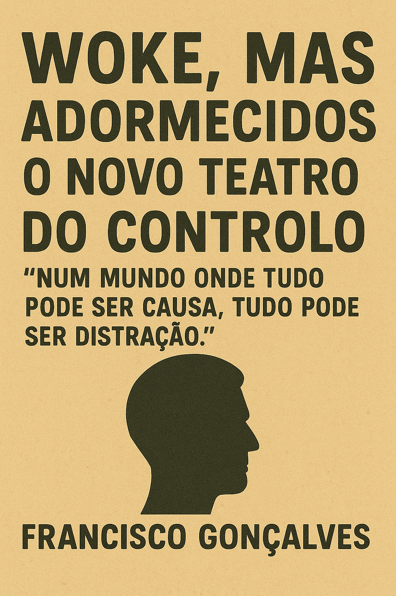

Publicado em 2025-05-23 18:12:01
por Francisco Gonçalves
Vivemos numa era onde a consciência social foi transformada em espetáculo, e o ativismo virou performance. A cultura woke, que nasceu como denúncia legítima de desigualdades históricas, tornou-se o teatro ideal para a nova forma de controlo. Um controlo subtil, colorido, aplaudido — mas não menos eficaz que o antigo bastão da censura.
Grita-se “justiça climática”, enquanto se pousa para selfies com smartphones feitos de lítio extraído por crianças no Congo. Pede-se “espaço seguro” nas universidades, enquanto se marginalizam ideias que não se alinham com a cartilha dominante. Clamam por diversidade, mas apenas a que cabe no algoritmo.
Os protestos tornaram-se festivais de identidade. As causas, slogans de catálogo. Os cartazes já vêm prontos — basta escolher entre “feminismo interseccional”, “colonialismo estrutural” ou “normatividade tóxica”. Mas não se fale de salários, de soberania alimentar, de privatizações nem da banca internacional. Isso não viraliza. Isso assusta os patrocinadores.
Enquanto as massas debatem géneros gramaticais, as elites verdadeiras — as que controlam recursos, dados, crédito e guerra — aplaudem discretamente. Criaram um ecossistema onde os jovens se indignam com palavras, mas aceitam sem luta o aumento das rendas, a precariedade laboral e a vigilância digital em nome da segurança e do conforto.
A nova censura não vem de generais. Vem de hashtags. Não prende corpos — cancela reputações. Não queima livros — entope o debate com barulho emocional, frases feitas, manuais de etiqueta ideológica.
Tudo isso dá uma ilusão de participação. De rebeldia. Mas é uma rebeldia pasteurizada, sancionada por grandes marcas e fundações internacionais. A verdadeira luta — por justiça económica, soberania nacional, liberdade de pensamento — essa é ignorada ou silenciada. Porque ameaça demasiado.
A cultura woke tornou-se o ruído perfeito para abafar o grito autêntico.
E quem ousa sair da partitura, é rotulado, excluído, censurado — não por ditadores, mas por exércitos de moralistas digitais, prontos a defender causas que nunca entenderam, contra pessoas que ousaram pensar por si.
O mundo está a ser sufocado entre o autoritarismo clássico e a moralidade fútil. Entre o cacete e o emoji. Entre o general de farda e o influencer da justiça instantânea.
Ou acordamos verdadeiramente — ou continuaremos woke… mas profundamente adormecidos.
Imagem cortesia de OpenAI (C)